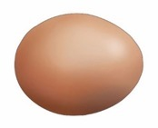
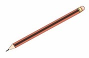
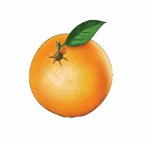
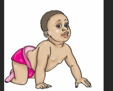

Exercise 3: Rearrange words - part 1
Exercise 3
Rearrange the words to form sentences. Write the sentences in your exercise book.

Write, type, or braille the sentence formed from these words: is egg this an.
iseggthisan

Write, type, or braille the sentence formed from these words: my nice is pencil.
myniceispencil

Write, type, or braille the sentence formed from these words: orange is the ripe.
orangeistheripe

Write, type, or braille the sentence formed from these words: this a baby is.
thisababyis